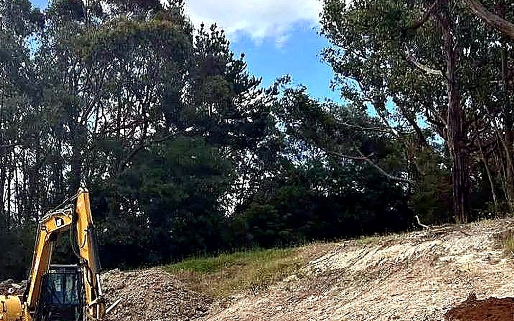
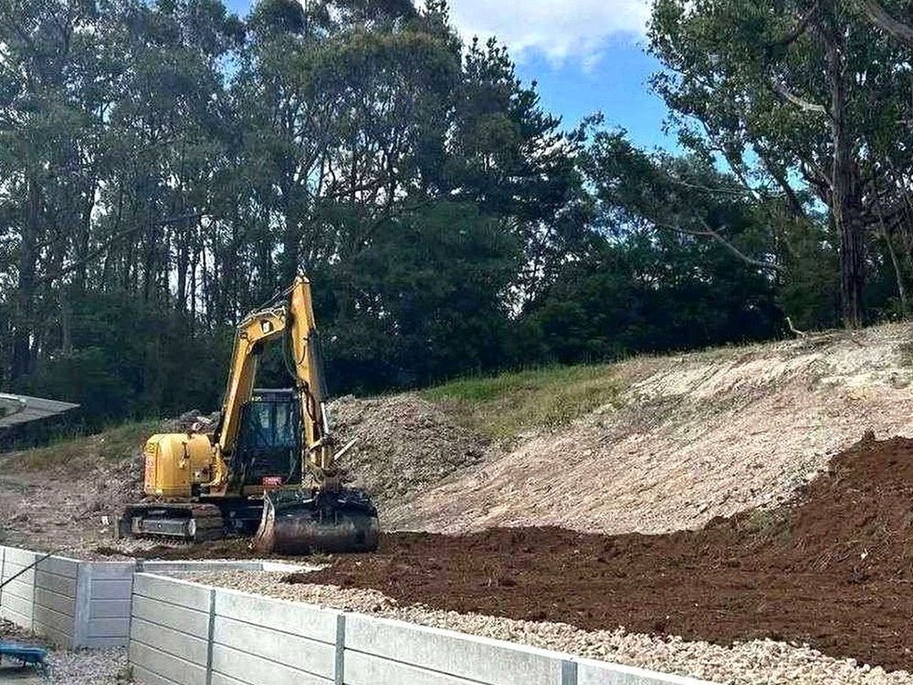
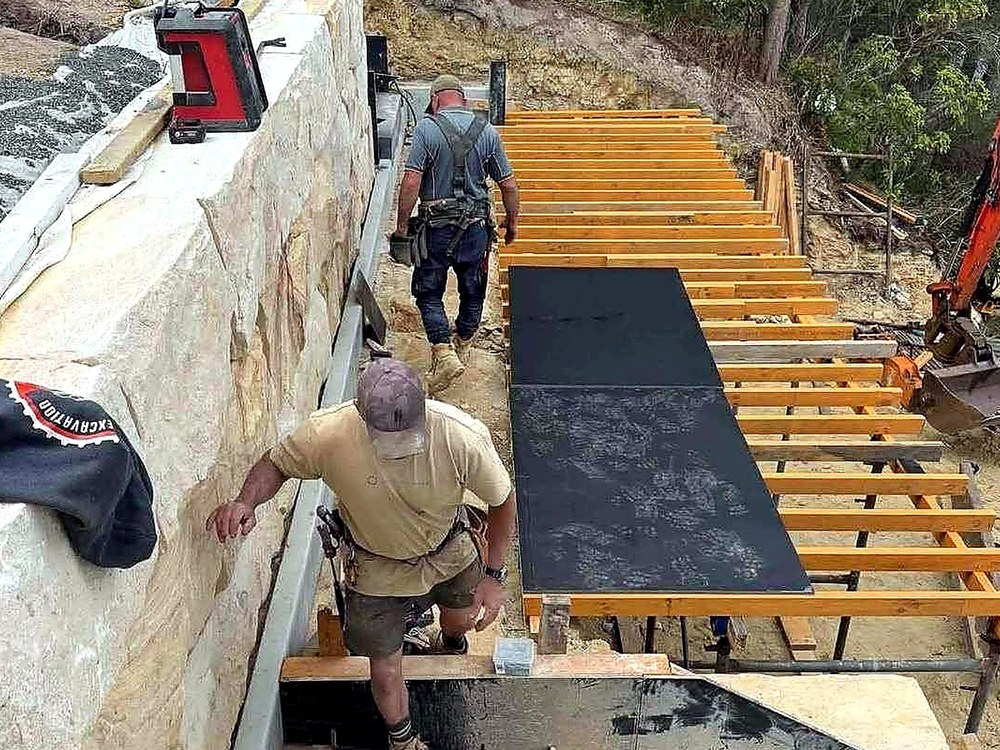
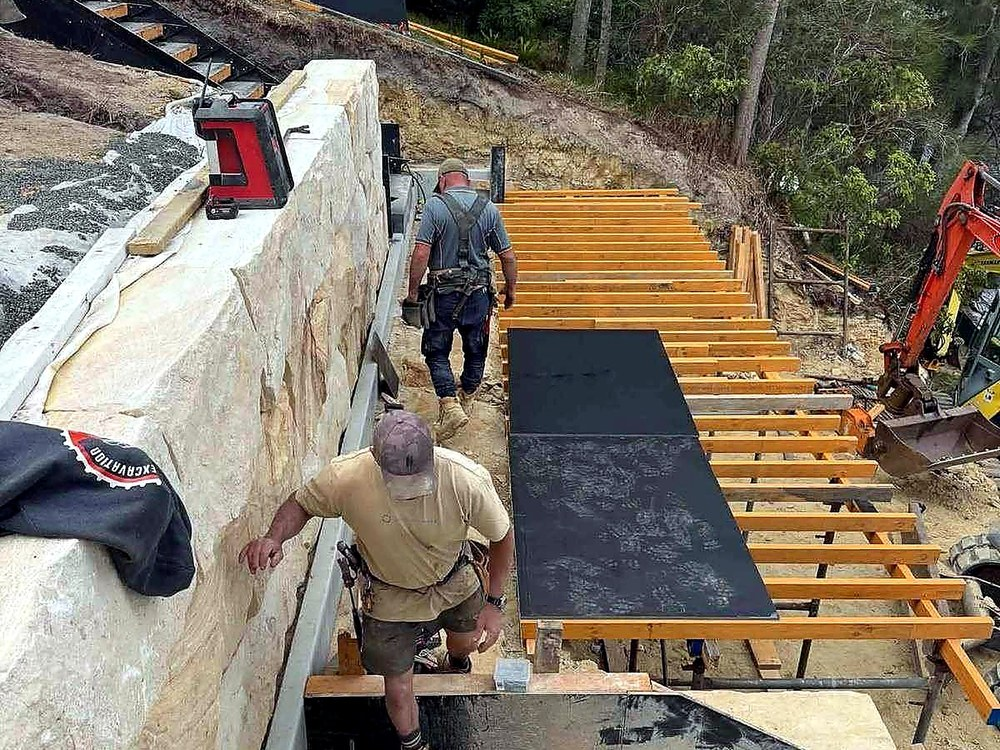

Reads a level
Levels are set and checked, so the slab or driveway that follows sits right.
Cuts, trenches, driveways and spoil — a compact machine with an operator who reads a level and leaves the site tidy.
Call 0488 907 100 Send a job
Small to medium earthworks for builders, homeowners and acreage.
| 01 | Site cuts & levelling | Cut to level for slabs, sheds and yards, with the fall left where it needs to be. |
| 02 | Trenching | Plumbing, electrical and drainage trenches cut clean and backfilled. |
| 03 | Driveways & access | Cut-downs and batters for driveways and hardstands, shaped to drain. |
| 04 | Spoil removal | Dirt carted away or spread on site — not left in a pile on the verge. |
| 05 | Footings & pier holes | Bored and excavated footings set out to the plan. |
| 06 | Clearing & demolition | Sheds, old concrete and scrub cleared and taken away. |
Compact enough for a backyard gate, capable enough for a full site cut.



Levels are set and checked, so the slab or driveway that follows sits right.
Gate widths, overhead lines and ground conditions checked before the machine arrives.
Spoil sorted, tracks swept, nothing left where the next trade has to move it.
What needs moving, roughly how much, and access for the machine.